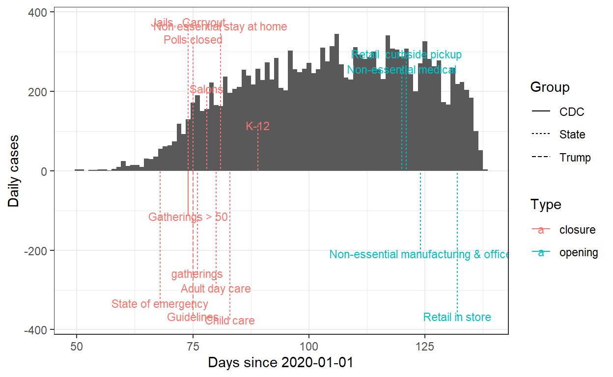
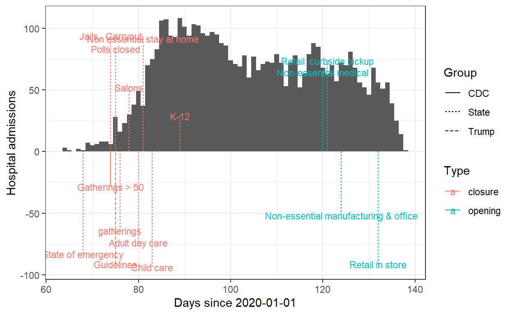
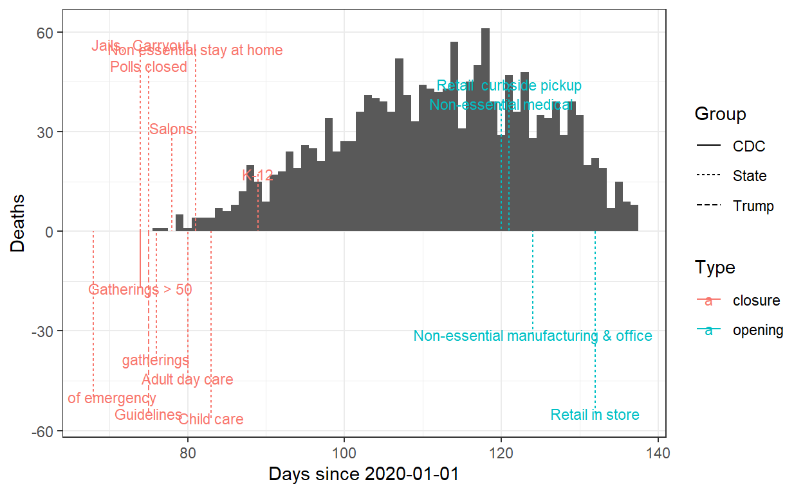
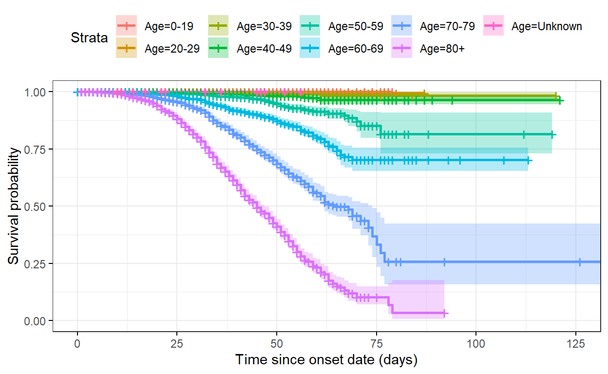
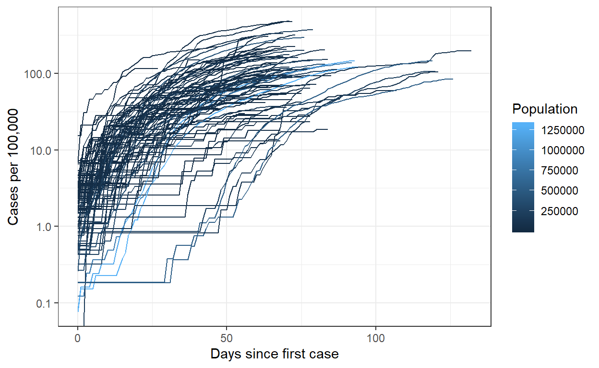
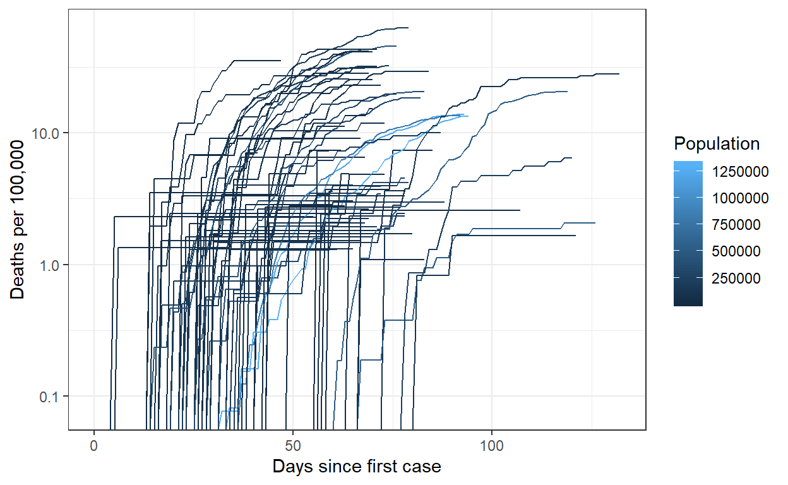
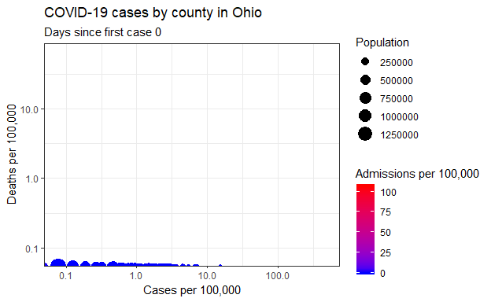
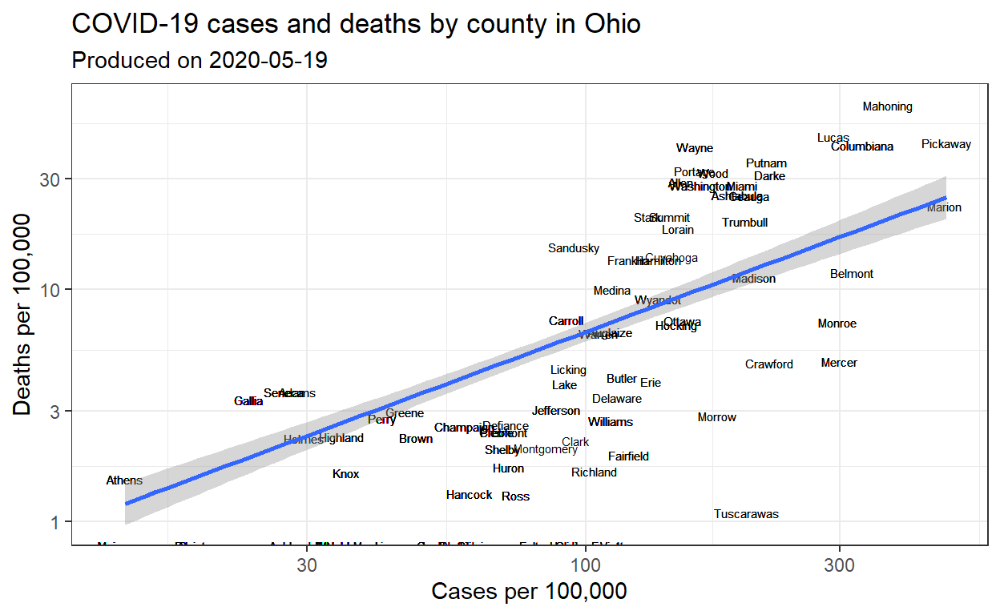

While I have been waiting for my Stan programs to run, I have been playing around with Ohio’s COVID-19 datset. So here are a few plots that I have made while learning a bit more R and dplyr.
rm(list = ls())
library(tidyr)
library(dplyr)
library(ggplot2)
library(gganimate)
library(lubridate)
library("survminer")
require(survival)
library(xtable)
library(scales)
set.seed(42)
# Source: https://worldpopulationreview.com/us-counties/oh/
pop<-read.csv("CountyPop.csv")
pop$CTYNAME<-gsub(" .*","",pop$CTYNAME)
colnames(pop)<-c("County","Population","GrowthRate")
D<-data.frame(read.csv('https://coronavirus.ohio.gov/static/COVIDSummaryData.csv'))
colnames(D)[1]<-c("County")
D<-merge(D,pop,by=c("County"))
# convert dates to days since 2020-01-01
D$Onset.Date<-yday(as.Date(D$Onset.Date, format="%m/%d/%Y"))-1
D$Admission.Date<-yday(as.Date(D$Admission.Date, format="%m/%d/%Y"))-1
D$Date.Of.Death<-yday(as.Date(D$Date.Of.Death, format="%m/%d/%Y"))-1
colnames(D)[3]<-"Age"
knitr::kable(head(D))| County | Sex | Age | Onset.Date | Date.Of.Death | Admission.Date | Case.Count | Death.Count | Hospitalized.Count | Population | GrowthRate |
|---|---|---|---|---|---|---|---|---|---|---|
| Adams | Female | 60-69 | 78 | NA | NA | 1 | 0 | 0 | 27724 | -2.9068 |
| Adams | Male | 40-49 | 88 | NA | NA | 1 | 0 | 0 | 27724 | -2.9068 |
| Adams | Female | 0-19 | 118 | NA | NA | 1 | 0 | 0 | 27724 | -2.9068 |
| Adams | Male | 80+ | 128 | 137 | 132 | 1 | 1 | 1 | 27724 | -2.9068 |
| Adams | Male | 20-29 | 131 | NA | NA | 1 | 0 | 0 | 27724 | -2.9068 |
| Adams | Male | 40-49 | 105 | NA | NA | 1 | 0 | 0 | 27724 | -2.9068 |
Here I compile a (very incomplete) list of policies, directives, orders, and so on of things happening at the state and federal level, mostly based on the Stay Safe Ohio Order.
# Stay Safe Order Ohio
#https://coronavirus.ohio.gov/static/publicorders/Directors-Stay-Safe-Ohio-Order.pdf
Dates<-rbind(c("03/16/2020","President Trump's Coronavirus guidelines issued","Guidelines","Trump","closure"),
c("03/15/2020","Ohio Department of Health: limits access to jails, limits sale of food to carry-out and delivery only","Jails, Carryout","State","closure"),
c("03/15/2020","CDC issues Interim Guidance for mass gatherings (>50 people)","Gatherings > 50","CDC","closure"),
c("03/16/2020","Ohio department of health closes polling stations for March 17 primary election","Polls closed","State","closure"),
c("03/17/2020","Ohio Department of Health limits mass gatherings","gatherings","State","closure"),
c("03/19/2020","Ohio Department of Health closes hair salons","Salons","State","closure"),
c("03/21/2020","Ohio Department of Health closes older adult day care and family entertainment centers","Adult day care","State","closure"),
c("03/22/2020","Ohio Department of Health orders all persons to stay at home unless engaged in essential activity","Non essential stay at home","State","closure"),
c("03/24/2020","Ohio Department of Health closes child care services","Child care","State","closure"),
c("03/30/2020","Ohio Department of Health closes K-12 schools","K-12","State","closure"),
c("03/09/2020","Governor declares state of emergency (Executive order 2020-01D)","State of emergency","State","closure"),
c("04/30/2020","SSOO(9) Non-essential medical services restrictions rescinded","Non-essential medical","State","opening"),
c("05/04/2020","SSOO(10-11) Non-essential manufacturing, general office environments may re-open","Non-essential manufacturing & office","State","opening"),
c("05/01/2020","SSOO(12) Retail may re-open: Curbside pickup, delivery, and appointments only","Retail curbside pickup","State","opening"),
c("05/12/2020","SSOO(12) Retail may re-open","Retail in store","State","opening")
)
colnames(Dates)<-c("Date","Event","Short","Group","Type")
Dates<-data.frame(Dates)
Dates$Date.Int<-yday(as.Date(Dates$Date, format="%m/%d/%Y"))-1
#Dates<-Dates %>% arrange(Date.Int)
Dates$position<-((1:dim(Dates)[1])-floor((1:dim(Dates)[1])/4)*4)*(-1)^(1:dim(Dates)[1])/4
Dates$position<-runif(dim(Dates)[2])*(-1)^(1:dim(Dates)[1])
knitr::kable(Dates)| Date | Event | Short | Group | Type | Date.Int | position |
|---|---|---|---|---|---|---|
| 03/16/2020 | President Trump’s Coronavirus guidelines issued | Guidelines | Trump | closure | 75 | -0.9148060 |
| 03/15/2020 | Ohio Department of Health: limits access to jails, limits sale of food to carry-out and delivery only | Jails, Carryout | State | closure | 74 | 0.9370754 |
| 03/15/2020 | CDC issues Interim Guidance for mass gatherings (>50 people) | Gatherings > 50 | CDC | closure | 74 | -0.2861395 |
| 03/16/2020 | Ohio department of health closes polling stations for March 17 primary election | Polls closed | State | closure | 75 | 0.8304476 |
| 03/17/2020 | Ohio Department of Health limits mass gatherings | gatherings | State | closure | 76 | -0.6417455 |
| 03/19/2020 | Ohio Department of Health closes hair salons | Salons | State | closure | 78 | 0.5190959 |
| 03/21/2020 | Ohio Department of Health closes older adult day care and family entertainment centers | Adult day care | State | closure | 80 | -0.7365883 |
| 03/22/2020 | Ohio Department of Health orders all persons to stay at home unless engaged in essential activity | Non essential stay at home | State | closure | 81 | 0.9148060 |
| 03/24/2020 | Ohio Department of Health closes child care services | Child care | State | closure | 83 | -0.9370754 |
| 03/30/2020 | Ohio Department of Health closes K-12 schools | K-12 | State | closure | 89 | 0.2861395 |
| 03/09/2020 | Governor declares state of emergency (Executive order 2020-01D) | State of emergency | State | closure | 68 | -0.8304476 |
| 04/30/2020 | SSOO(9) Non-essential medical services restrictions rescinded | Non-essential medical | State | opening | 120 | 0.6417455 |
| 05/04/2020 | SSOO(10-11) Non-essential manufacturing, general office environments may re-open | Non-essential manufacturing & office | State | opening | 124 | -0.5190959 |
| 05/01/2020 | SSOO(12) Retail may re-open: Curbside pickup, delivery, and appointments only | Retail curbside pickup | State | opening | 121 | 0.7365883 |
| 05/12/2020 | SSOO(12) Retail may re-open | Retail in store | State | opening | 132 | -0.9148060 |
## new cases
plt<-(
ggplot()
+theme_bw()
+geom_histogram(data=D[D$Onset.Date>=50,],aes(x=Onset.Date),binwidth=1)
+ylab("Daily cases")+xlab("Days since 2020-01-01")
+geom_segment(data=Dates,aes(y=400*position,yend=0,x=Date.Int,xend=Date.Int,color=Type,linetype=Group))
+geom_text(data=Dates,aes(y=400*position,x=Date.Int,label=Short,color=Type),size=3)
#+coord_fixed(ratio = 1e-2)
)
plt
## Admitted to hospital
plt<-(
ggplot(data=D,aes(x=Admission.Date))
+theme_bw()
+geom_histogram(binwidth=1)
+geom_segment(data=Dates,aes(y=100*position,yend=0,x=Date.Int,xend=Date.Int,color=Type,linetype=Group))
+geom_text(data=Dates,aes(y=100*position,x=Date.Int,label=Short,color=Type),size=3)
+ylab("Hospital admissions")+xlab("Days since 2020-01-01")
)
plt
## Admitted to hospital
plt<-(
ggplot(data=D,aes(x=Date.Of.Death))
+theme_bw()
+geom_histogram(binwidth=1)
+ylab("Deaths")+xlab("Days since 2020-01-01")
+geom_segment(data=Dates,aes(y=60*position,yend=0,x=Date.Int,xend=Date.Int,color=Type,linetype=Group))
+geom_text(data=Dates,aes(y=60*position,x=Date.Int,label=Short,color=Type),size=3)
)
plt
Probably very pessimistic due to tests being conditioned on symptoms.
D$Died<-1+as.integer(!is.na(D$Date.Of.Death))
D$time<-max(D$Onset.Date)-D$Onset.Date
D<-D[order(D$Age),]
fit <- survfit(Surv(time, Died) ~ Age,data=D)
ggsurvplot(fit, data = D,conf.int = TRUE, ggtheme = theme_bw() ,
xlab="Time since onset date (days)")
Cases<-group_by(D, County,Onset.Date) %>% summarise(New.Cases= length(time))
colnames(Cases)[2]<-"Date"
Admissions<-group_by(D[!is.na(D$Admission.Date),], County,Admission.Date) %>% summarise(New.Admissions= length(time))
colnames(Admissions)[2]<-"Date"
Deaths<-group_by(D[!is.na(D$Date.Of.Death),], County,Date.Of.Death) %>% summarise(New.Deaths= length(time))
colnames(Deaths)[2]<-"Date"
COUNTIES<-merge(Cases,merge(Deaths,Admissions,by=c("County","Date"),all=TRUE),by=c("County","Date"),all=TRUE)
First.Case.Date<-aggregate(COUNTIES$Date,by=list(COUNTIES$County),FUN=min)
colnames(First.Case.Date)[1]<-"County"
DateList<-1:max(D$Onset.Date)
dl<-data.frame(DateList)
dl$Date<-dl$DateList
DL<-data.frame()
CList<-unique(COUNTIES$County)
for (cc in 1:length(CList)) {
tmp<-dl
tmp$County<-CList[cc]
DL<-rbind(DL,tmp)
}
COUNTIES<-merge(COUNTIES,DL[,c(2,3)],by=c("County","Date"),all=TRUE)
COUNTIES<-COUNTIES[order(COUNTIES$County,COUNTIES$Date),]
# NA==> no death/admission/case on that day
COUNTIES[is.na(COUNTIES)]<-0
COUNTIES<-merge(COUNTIES,pop[,c("County","Population")],by="County")
COUNTIES<-COUNTIES %>%
arrange(County,Date) %>%
group_by(County) %>%
mutate(Cumulative.Cases = cumsum(New.Cases)) %>%
mutate(Cumulative.Deaths = cumsum(New.Deaths)) %>%
mutate(Cumulative.Admissions = cumsum(New.Admissions)) %>%
mutate(Cumulative.Cases.Frac = Cumulative.Cases/Population) %>%
mutate(Cumulative.Deaths.Frac = Cumulative.Deaths/Population) %>%
mutate(Cumulative.Admissions.Frac = Cumulative.Admissions/Population)
COUNTIES<-merge(COUNTIES,First.Case.Date,by="County")
COUNTIES$Time.Since.First.Case<-COUNTIES$Date-COUNTIES$x
(ggplot(COUNTIES[COUNTIES$Time.Since.First.Case>=0,],aes(x=Time.Since.First.Case,y=Cumulative.Cases.Frac*100000,group=County,color=Population))
+geom_line()
+theme_bw()
+xlab("Days since first case")
+ylab("Cases per 100,000")
+scale_y_continuous(trans = "log10")
)
(ggplot(COUNTIES[COUNTIES$Time.Since.First.Case>=0,],aes(x=Time.Since.First.Case,y=Cumulative.Deaths.Frac*100000,group=County,color=Population))
+geom_line()
+theme_bw()
+xlab("Days since first case")
+ylab("Deaths per 100,000")
+scale_y_continuous(trans = "log10")
)
plt<-(ggplot(COUNTIES[COUNTIES$Time.Since.First.Case>=0,],aes(y=Cumulative.Deaths.Frac*100000,x=Cumulative.Cases.Frac*100000,label=County,size=Population,color=Cumulative.Admissions.Frac*100000))
+geom_point()
+theme_bw()
#+theme(legend.position = "none")
+transition_time(Time.Since.First.Case)
+labs(title= "COVID-19 cases by county in Ohio",subtitle = "Days since first case {round(frame_time, 0)}")
+xlab("Cases per 100,000")
+ylab("Deaths per 100,000")
+scale_y_continuous(trans = "log10")
+scale_x_continuous(trans = "log10")
+labs(color = "Admissions per 100,000")
+scale_fill_gradient(
low = "blue",
high = "red",
space = "Lab",
na.value = "grey50",
guide = "colourbar",
aesthetics = "color"
)
)
animate(plt,nframes=max(COUNTIES$Time.Since.First.Case))
CountiesAggregate<- COUNTIES %>% group_by(County) %>%
filter(Cumulative.Deaths.Frac == max(Cumulative.Deaths.Frac),
Cumulative.Cases.Frac == max(Cumulative.Cases.Frac),
Cumulative.Admissions.Frac == max(Cumulative.Admissions.Frac))
(ggplot(data=CountiesAggregate,aes(x=Cumulative.Cases.Frac*10^5,y=Cumulative.Deaths.Frac*10^5,label=County))
+scale_y_continuous(trans = "log10")
+scale_x_continuous(trans = "log10")
+geom_text(size=2)
+xlab("Cases per 100,000")
+ylab("Deaths per 100,000")
+theme_bw()
+geom_smooth(method=lm,formula=y~x)#
+labs(title = "COVID-19 cases and deaths by county in Ohio",subtitle = paste("Produced on",Sys.Date()))
)